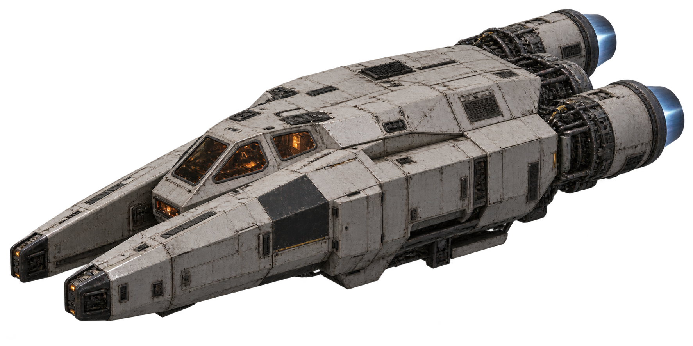

Houston,
we have a platform…
Join us aboard an expedition to MARS
UIT's new framework for turning innovative ideas into secure internal applications with a flyby of PHOBOS, a modern web-store for computer ordering, and a stop at the proposed AIDE Committee
Today's trajectory
Thirty minutes. Three stops. One story
How we move from
IDEAS
to creating governed, sustainable digital solutions
What is MARS?
York's AI-supported platform for building, testing and launching custom digital applications and solutions
- PILOTS currently in a pilot phase for York faculty and staff
- PURPOSE to empower employees to transform ideas into university applications
- PATH Idea → Prototype → Playground → Production
AI made it possible for anyone to build. MARS makes it safe, supported and repeatable
Built for people who think, "there's got to be a better way!"
Working with AI, MARS gives everyone, even non-developers (vibe coders) a supported way to turn ideas into working apps. Replace a manual process. Simplify a cumbersome workflow.
Create that thing York has always needed
Start small
Your first version exists to help you learn, not to be perfect
Learn fast
Experimentation is easy by design; we have flight plans that keep you and York safe
Scale responsibly
Governance arrives at the right moment, not as an asteroid to take you off course one
Each app is unique
Their foundations are consistent
Think of it like building a house in a city:
🏙️ MARS = the city
Shared roads, utilities and bylaws. You don't pave a new street to build a house
🏗️ Workspace = a serviced lot
A standard container per app: zoned, foundation poured, ready to build on
📐 York context = building code
Passport York, design standards and supported languages are built in from the start
👷 AI = the construction crew
You give the orders; it builds to plan and to code: inside the MARS structure
You don't build a city every time you need a house
🛰️ Scanners show a process in distress…
Computer ordering at York: a largely manual process that deserved to be a modern web-store experience
Enter PHOBOS a MARS-designed custom application that finally cracked it
Even if getting to orbit took a few missions
Three launches
Three scrubbed missions
What makes York special, makes out-of-the-box solutions challenger missions..
Nothing in orbit worked
so we went to MARS🚀
MARS let us build around our process, its quirks and the shopping experience our users needed
🧭 Our process sets the course
We shaped the app to fit how we work, without changing our process to fit a product or working around features we couldn't change
🚀 Progress between operations
Run a prompt while heading to lunch, annotate screenshots with changes and keep building alongside daily work
👩🚀 Built by the ground crew
The people who know the process, its quirks and the user experience could turn that knowledge into a working solution
🌌 A mission within reach
What once would have needed a full project and a team of developers became something we could deliver flexibly around operations
BUILD VS BUY
We chose to fly
PHOBOS today: from manual process to web store
What used to be forms, emails and follow-ups is now a modern browsing-and-ordering experience
🖥️ [ Demo moment: live walkthrough or screenshot tour ]

Stage 2 · Expand to expanseSame foundation
A whole expanse of possibilities
The computer purchase tool: proof that small apps thrive on MARS
Scaling up to process and inventory management
MARS at the largest end of the spectrum
A new way to serve the community
A new way for the community to serve themselves
Your flight path: idea → prototype
- Idea: start with the problem, not the tech. What's difficult, slow or manual today?
- Inventory: check York first. Reuse beats rebuild.
- Learn: MARS training + safe AI tooling (GitHub Copilot).
- Prototype: build the smallest useful version in your own environment
- Playground: share and test safely with real users in a York-hosted non-production space
You don't need a complete plan before you begin. Your first version exists to help you learn
Governance on the horizon 🛡️
Call for AIDE
The proposed AI Development Enablement Committee helps York encourage AI-enabled innovation while maintaining governance, accountability, privacy, security, accessibility and human oversight
Guide
Advice on ideating and designing with AI: from half-baked, pie-in-the-sky ideas to production tools
Connect
Security, privacy, architecture, accessibility, operations and funding: in the conversation early
Route
IPPM? Change Management? Security review? DON'T WORRY: that's what we're here for
Could ≠ should: AIDE recommends the best path forward
From first idea to launch
You build the prototype · AIDE helps chart the right route
- 01
Check the coordinates
Check the AI Inventory
Already solved? Reuse the tool or contact its owner - 02
Build your prototype
Download MARS, build, test and improve
Optional help: training, AIDE consult and ideation checklist - 03
Request flight support
Need York resources? IDEATION request
Need MARS Playground? PLAYGROUND request - 04
Ready for production?
Submit a Production Readiness Request to AIDE
Not ready? Keep building and testing
AIDE · Mission control
Consult when needed or requestedReview the idea and update the inventory · Production requests go to INFOSEC for a vulnerability scan assessment, then back to AIDE
Keep working; when ready for production, AIDE supports your CAB submission
Promote to Sandbox through a service request to the MARS team
A formal initiative is needed; AIDE supports your IPPM submission
Stop, combine or redirect the work and update the inventory
Where we're heading
You don't need to be a rocket scientist to help shape what comes next
🚀 Join the pilot users
Help us explore MARS with real ideas, real processes and feedback from York faculty and staff
🧭 Training on the horizon
MARS live training sessions and an online course are coming
🛠️ Playground under construction
A shared space for safely testing and learning is taking shape
🛡️ AIDE taking shape
Committee ratification and formation are underway

Embark on the next mission
Scan the QR code to sign up, or visit the URL below.
https://forms.cloud.microsoft/r/CCvLu5NaxQGround control
debrief
Questions?